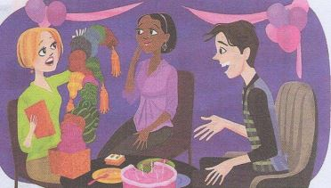

It's interesting. စိတ္ဝင္စားဖို႕ေကါင္းတယ္
Wendy: Wow! What are these?ဝိုး..ဒါက ဘာေတြလဲ
ံHelen: They're earnings.
အဲ့ဒါ နားဆြဲေတြေလ။
Wendy: Oh, cool. Thank you, Helen. They're great.
ဟိုး..မိုက္တယ္ေနာ္..ေက်းဇူးပဲ ေဟလင္။ နားဆြဲေတြအရမ္းလွတယ္
Helen: You are welcome.
ၾကိဳဆိုပါတယ္။
Rex: Now open this box!
ကဲအခု..ဒီေသတၱာ ဖြင့္လိုက္ၾကစို႕
Wendy: OK. Uh, What's this?
အိုေက။ အာ..ဒါဘာလဲ
Rex: It's a scarf.
ဒါက လည္စည္း ပုဝါေလ။
Wendy: Oh, it's......interesting. Thank you, Rex. It's very nice.
အိုး....ဒါေလး..က စိတ္ဝင္စားဖို႕ေကါင္းလိုက္တာ....ေက်းဇူးပဲ..Rex။ ဒါအရမ္းလွတာပဲ